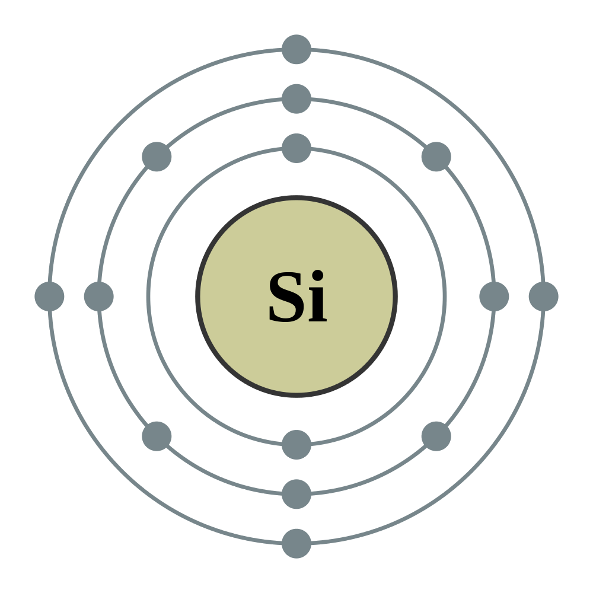

←
→
Siliconis a chemical element with symbol Si and atomic number 14. It is a hard and brittle crystalline solid with a blue-grey metallic lustre; and it is a tetravalent metalloid and semiconductor. It is a member of group 14 in the periodic table: carbon is above it; and germanium, tin, and lead are below it. It is relatively unreactive. Because of its large chemical affinity for oxygen, it was not until 1823 that Jöns Jakob Berzelius was first able to prepare it and characterize it in pure form. Its melting and boiling points of 1414 °C and 3265 °C respectively are the second-highest among all the metalloids and nonmetals, being only surpassed by boron. Silicon is the eighth most common element in the universe by mass, but very rarely occurs as the pure element in the Earth's crust. It is most widely distributed in dusts, sands, planetoids, and planets as various forms of silicon dioxide (silica) or silicates. Over 90% of the Earth's crust is composed of silicate minerals, making silicon the second most abundant element in the Earth's crust (about 28% by mass) after oxygen.
Most silicon is used commercially without being separated, and often with little processing of the natural minerals. Such use includes industrial construction with clays, silica sand, and stone. Silicates are used in Portland cement for mortar and stucco, and mixed with silica sand and gravel to make concrete for walkways, foundations, and roads. They are also used in whiteware ceramics such as porcelain, and in traditional quartz-based soda-lime glass and many other specialty glasses. Silicon compounds such as silicon carbide are used as abrasives and components of high-strength ceramics. Silicon is the basis of the widely used synthetic polymers called silicones.
Elemental silicon also has a large impact on the modern world economy. Most free silicon is used in the steel refining, aluminium-casting, and fine chemical industries (often to make fumed silica). Even more visibly, the relatively small portion of very highly purified elemental silicon used in semiconductor electronics (< 10%) is essential to integrated circuits — most computers, cell phones, and modern technology depend on it.
Silicon is an essential element in biology, although only traces are required by animals. However, various sea sponges and microorganisms, such as diatoms and radiolaria, secrete skeletal structures made of silica. Silica is deposited in many plant tissues.